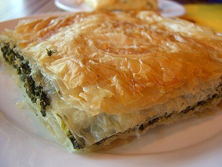

Spanakopita

Description
This Greek spanakopita recipe for spinach and feta appetizer triangles came from a Greek family friend. These delicious savory treats can be made ahead of time and frozen before baking to golden and crisp.
Ingredients
- ½ cup vegetable oil
- 2 large onions, chopped
- 2 (10 ounce) packages frozen chopped spinach, thawed, drained, and squeezed dry
- 2 tablespoons chopped fresh dill
- 2 tablespoons all-purpose flour
- 2 (4 ounce) packages feta cheese, crumbled
- 4 large eggs, lightly beaten
- salt and ground black pepper to taste
- 1 ½ (16 ounce) packages phyllo dough
- 1½ cups butter, melted
Steps
- Step 1: Preheat the oven to 350 degrees F (175 degrees C).
- Step 2: Heat vegetable oil in a large saucepan over medium heat. Add onions; slowly cook and stir until softened. Stir in spinach, dill, and flour; cook until most moisture is absorbed, about 10 minutes. Off heat, stir in feta cheese, eggs, salt, and black pepper; set filling aside.
- Step 3: Separate 1 phyllo sheet from stack; place on a flat work surface. Evenly brush phyllo sheet with a light coating of butter. Place another phyllo sheet over buttered phyllo sheet; press phyllo sheets together. Cut layered phyllo sheets into long strips about 3-inches wide. (Keep remaining stack phyllo sheets covered with plastic wrap to keep from drying out.)
- Step 4: Lay 1 phyllo strip on the work surface with 1 narrow end facing you. Place a heaping tablespoon of filling 1 inch from the narrow end. Fold the bottom right corner over the filling to the left edge to form a triangle. Fold the triangle up the strip, bringing the point at the bottom left up to rest along the left edge. Turn the lower left corner over to touch the right edge. Continue turning the triangle over in this manner until you reach the end of the phyllo. Repeat Steps 3 and 4 (buttering, stacking, pressing, cutting, filling, and folding) with remaining phyllo and filling.
- Step 5: Place phyllo triangles on a large baking sheet; brush with remaining butter. (At this point, the pastries may be frozen. See Cook's Note.)
- Step 6: Bake in the preheated oven until phyllo is golden brown and crisp, 45 to 60 minutes.
Home